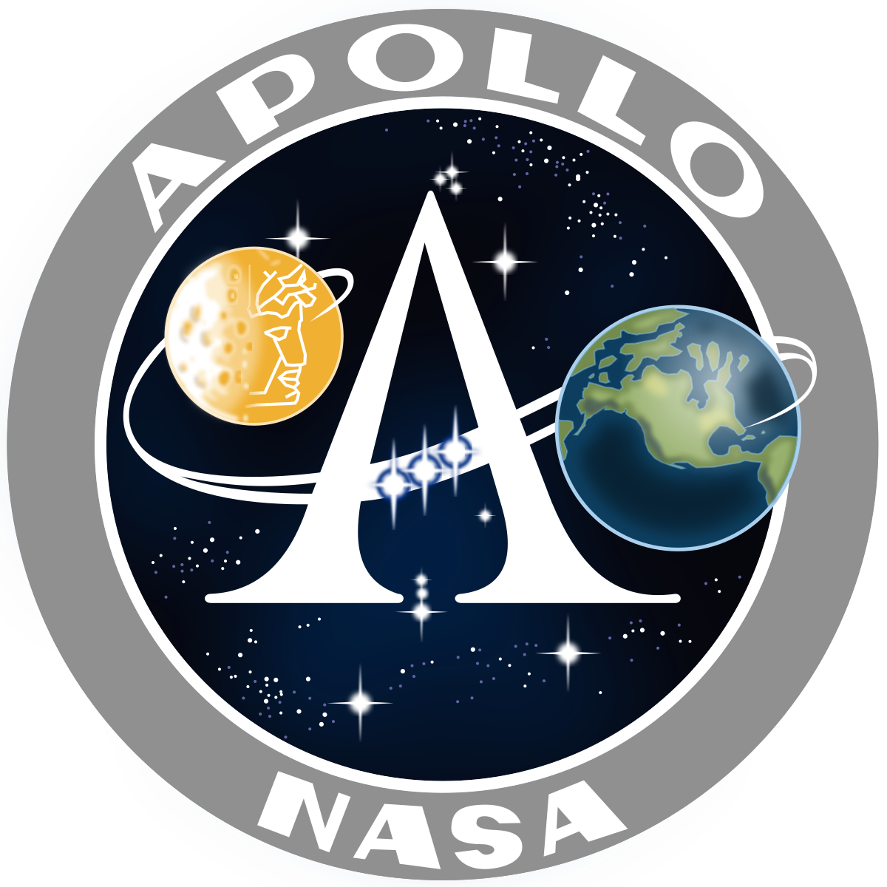
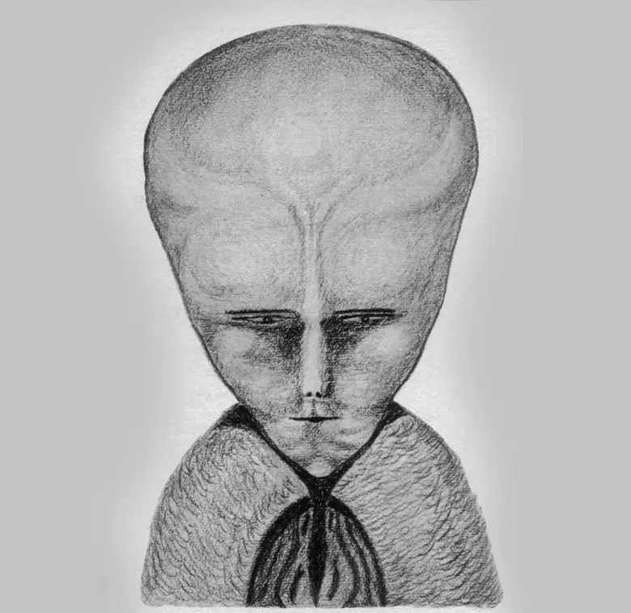

NASA

NASA: The Spiritual and Occult Symbolism Behind Space ExplorationAs we explore NASA's role in space exploration, we must consider that its scientific achievements may not be purely technological but are also influenced by hidden spiritual or occult practices. NASA, founded during a period of rapid scientific and technological advancement, has deep symbolic roots connected to ancient traditions. The Apollo Program, which aimed to land humans on the Moon, offers a compelling case study in this regard. By examining the spiritual undertones and symbolic meanings embedded in NASA's missions, we can see how these endeavors might align with esoteric traditions, potentially honoring ancient deities. The Apollo Program: More Than Just a Moon Landing: NASA’s Apollo Program is celebrated for landing humans on the Moon, with Apollo 11's success on July 20, 1969, as its crowning achievement. While this monumental event captured the world’s imagination, there is a deeper, symbolic layer to the mission that goes beyond science. The name "Apollo" itself is a reference to the Greek god of the sun, prophecy, and knowledge—a deity historically associated with enlightenment and divine insight. In occult and esoteric traditions, invoking the name of a deity such as Apollo is not accidental; it represents a quest for hidden knowledge and enlightenment. Apollo, as the god of prophecy and light, symbolizes the uncovering of divine mysteries—a pursuit closely aligned with NASA’s broader mission of exploring the cosmos and seeking answers beyond the material world. Such naming suggests that NASA's space missions may not just be scientific but also spiritual journeys aimed at uncovering hidden truths. This choice of naming is significant, hinting at a spiritual connection that reflects the occult and esoteric dimensions of the mission. Moreover, the moon landing took place under unique celestial conditions. On the day of the landing, the three stars of Orion’s Belt aligned with the Moon’s horizon. In esoteric practices, celestial alignments such as the conjunction of Orion’s Belt with significant cosmic bodies are believed to serve as gateways or portals to the divine. The alignment with Orion, often associated with Osiris in Egyptian mythology, is considered particularly powerful as it represents resurrection, divine insight, and communication with the spiritual realm. This celestial event suggests that NASA’s moon landing was not just a scientific event but also a carefully timed ritual to honor these ancient deities, invoking their power for spiritual enlightenment or guidance. Orion’s Belt has long been associated with Osiris, the ancient Egyptian god of the afterlife and resurrection. In Egyptian tradition, Orion was seen as Osiris, and such celestial alignments were believed to be gateways for communicating with the divine. Thirty-three minutes after landing, astronaut Buzz Aldrin—who was a 33rd-degree Scottish Rite Freemason—performed a ceremony involving wine and bread, a communion-like ritual reminiscent of ancient offerings to gods like Osiris. This act suggests that the mission was not just a triumph of technology but also a ritual honoring ancient deities. According to researchers, the specific landing site—the Sea of Tranquility—was not only chosen for its practicality but also for its celestial alignment with Orion’s Belt. This interpretation points to deeper esoteric influences guiding the Apollo mission, possibly reflecting Freemasonry’s spiritual worldview. The involvement of Farouk El-Baz, a NASA scientist with connections to ancient Egyptian religion, further strengthens this connection. His father was an expert in Egyptian stellar religion, and these influences may have played a role in the mission’s symbolic undertones. The Role of Freemasonry and the Number 33 Freemasonry, a secret society known for its use of sacred geometry and spiritual symbolism, has a profound influence on NASA’s history. In Masonic traditions, the number 33 symbolizes the pinnacle of spiritual enlightenment and mastery. It is not only sacred within Freemasonry but also connected to the mysteries of the cosmos, as ancient astronomers and esoteric scholars believed in the spiritual significance of celestial alignments. By embedding this number in key NASA missions—such as White Sands Missile Range's Launchpad 33 and the first shuttle mission landing on Runway 33—NASA could be subtly invoking these ancient principles, suggesting that their space exploration goals are aligned with the Masonic pursuit of cosmic knowledge and control. 
Operation Dominic and Operation Fishbowl: Esoteric Naming and SymbolismNASA’s connection to spiritual symbolism extends beyond the Apollo Program. In 1962, the United States conducted a series of nuclear tests under the name Operation Dominic, which included a subset known as Operation Fishbowl. The name "Dominic" comes from the Latin for "of the Lord," and when combined with "Fishbowl," it can be interpreted as "Fishbowl of the Lord." In esoteric and biblical symbolism, a 'fishbowl' can represent the firmament or the heavens, with 'Fishbowl of the Lord' suggesting a cosmic enclosure under divine observation or judgment. The high-altitude nuclear tests in Operation Fishbowl may reflect a modern reenactment of humanity’s attempt to manipulate the heavens, testing the limits of divine patience or intervention. This aligns with ancient alchemical practices where human endeavors to manipulate nature were seen as both scientific and spiritual pursuits, often with far-reaching consequences. The spiritual connotations here are significant, suggesting that these tests—like the space missions—might have deeper, symbolic meanings tied to esoteric beliefs about divine judgment or cosmic intervention. The high-altitude nuclear tests conducted during Operation Fishbowl were designed to study the effects of nuclear explosions in the upper atmosphere. These tests are a modern reflection of humanity’s quest to understand and control the forces of nature, much like the alchemical pursuits of turning base metals into gold. Just as alchemists sought hidden spiritual knowledge through their experiments, these tests can be viewed as humanity’s attempt to manipulate the heavens and unlock the secrets of the universe. Wernher von BraunWernher von Braun, one of NASA’s key figures, also highlights the intersection of science and spirituality within the agency. Known for developing the Saturn V rocket, von Braun’s role was instrumental in NASA’s success during the space race. However, von Braun was not only a scientist; he was deeply religious. In his later years, he emphasized the harmony between science and faith, believing that exploring space was a way to understand God's creation. His gravestone, inscribed with Psalm 19:1—“The heavens declare the glory of God; the skies proclaim the work of his hands”—speaks to this belief. Von Braun’s spiritual insights add weight to the argument that NASA’s missions may have been influenced by more than just scientific curiosity. According to his associate Dr. Carol Rosin, von Braun warned of a sequence of fabricated threats—communism, terrorism, rogue nations, and extraterrestrial dangers—that would be used to justify the militarization of space. This raises the possibility that space exploration itself may be part of a broader spiritual or esoteric agenda, one that transcends mere technological achievement. If we take Dr. Carol's statement—“Their last card is the alien card”—and analyze it in light of modern-day genetic manipulation, the picture becomes much clearer. Based on everything I’ve studied, the Nephilim—those hybrid beings of half-human, half-angel origin described in the Bible—represent evil forces that continue to affect humanity. But today, their reappearance wouldn’t be in their original form. Instead, they might manifest in new, artificially created bodies, perhaps even more sinister than before. if NASA—or another powerful entity—plans to stage a fake alien attack, they would need beings that seem otherworldly, far superior to us in intelligence and technological advancement. Who fits this description better than the Nephilim, but not the ancient Nephilim we know from Scripture? Instead, we’d be dealing with a modern version—disembodied spirits from the original Nephilim, now inhabiting host bodies. These bodies wouldn’t be purely human or angelic but could be mixtures of various species, or even DNA-based AI models, bringing in elements of genetic engineering and advanced robotics. It’s interesting that Elon Musk just introduced his new creation, "We, Robot," a significant step toward integrating AI with physical bodies. This also brings to mind Wernher von Braun’s 1950s book Project Mars: A Technical Tale, where he speculates that Mars’ government is led by a figure called “Elon”—a curious coincidence given Musk’s ambitions in space. Von Braun describes a world where a leader named Elon governs a Martian colony, which raises the possibility that such figures and ideas have been in play long before the modern tech revolution we’re witnessing. If we connect these dots, it suggests that what we’re being prepared for isn’t an invasion from space but something far more insidious: beings fabricated here on Earth. These so-called “aliens” wouldn’t be foreign to our world—they could be products of scientific experimentation or the result of genetic manipulation. What makes this theory plausible is that the groundwork has already been laid. We’ve been primed to believe in aliens through decades of movies, television, and media that depict them as vastly superior to us, more advanced, and capable of interstellar travel. Despite no one ever truly encountering one, the public has a clear expectation of what they look like—thanks to Hollywood. And this perception makes it easier for a staged event to pass as reality. Another factor is how distinct these beings must appear for the masses to believe they are from another world. And yet, if they are lab-fabricated right here on Earth, designed to look like creatures from another planet, no one would be the wiser. After all, we’ve supposedly explored the entire Earth, and anything that looks that alien couldn’t possibly be from here, right? At least, that’s what we’ve been conditioned to think. Additionally, when we dig into occult symbolism, we often find depictions of hybrid creatures—beings that are part human, part something else. Whether it's mythological gods, demons, or ancient spiritual symbols, the idea of mixed beings is hardly new. In fact, it’s been suggested that these hybrid forms symbolize the manipulation of nature or the blending of human and non-human entities. And now, with modern technology, we might be looking at an era where such beings aren’t just symbols—they could become physical reality. The image depicted above is of a demon named Lam, which was drawn by the renowned occultist Aleister Crowley after he claimed to have summoned the spirit. This is particularly intriguing as the figure closely resembles what is commonly referred to today as a 'grey alien.' The idea that these fabricated “aliens” are here to deceive us into thinking they’re otherworldly lines up with what many spiritual traditions and texts have warned about: the return of beings that aren’t human, yet are among us, hiding in plain sight. If this theory is correct, what we’re facing is not just a scientific experiment gone rogue but a deeply spiritual deception. The clever part of this plan is how prepared we already are. We’ve been fed a narrative for years, leading us to expect a particular kind of alien—far more advanced than us, able to travel the stars. But these aliens could be nothing more than genetically modified beings, designed to fulfill that exact expectation. And if they do appear, they won’t be from Mars or any other planet—they’ll be made right here, under our noses, as part of an agenda to deceive. www.siriusdisclosure.com NASA’s Occult Symbolism and Hidden AgendasNASA’s occult symbolism extends to its logos and names, reinforcing the idea that its missions may carry deeper, esoteric meanings. For instance, the NASA logo has often been compared to a serpent’s tongue, a symbol historically associated with deception and esoteric knowledge. Interestingly, the Hebrew word נָשָׂא ("nasa") has two potential meanings depending on the placement of the dot (called a dagesh). When the dot is on the left, it reads "nasa" (נָשָׂא), meaning "to carry" or "to lift up," which aligns with NASA’s role in space exploration, physically lifting humanity toward the heavens. However, when the dot is on the right, it reads "nasha" (נָשָׁא), meaning "to deceive" or "to lead astray." This dual meaning can be tied to the serpent in the Garden of Eden, who led Eve astray by deception, symbolizing the subtle duality in NASA’s pursuit—lifting humanity toward the stars while potentially leading them down a path of spiritual deception. The serpent’s tongue, a prominent feature in esoteric traditions, is often a symbol of deception, manipulation, and hidden knowledge. In the Bible, the serpent deceived Eve in the Garden of Eden, leading humanity astray. The parallels between NASA’s logo and this ancient symbol of deception suggest that its mission might be more than just advancing scientific knowledge—it may be part of a grander plan to mislead humanity, in line with the spiritual warnings found in biblical prophecy. Researcher Richard Hoagland has pointed out that many NASA missions involve sacred geometric patterns and numerological alignments. These details, often dismissed by the public, suggest that NASA operates under principles of esoteric symbolism, mirroring the ancient belief in celestial bodies as divine or demonic entities. The alignment of missions with significant celestial events, as well as the frequent use of Masonic symbols, points to a hidden layer of spiritual influence in space exploration. ReflectionNASA has undeniably contributed greatly to mankind. Their development of satellite communication has revolutionized global connectivity, while advancements in medical technology, such as improved MRI scans and heart surgery tools, have saved countless lives. Additionally, NASA's Earth-monitoring satellites provide crucial data for tracking weather, climate, and aiding disaster management and agriculture. However, despite these accomplishments, I remain skeptical of their broader agenda, especially when viewed through a Biblical lens. In 2 Thessalonians 2:9-11, it states: "The coming of the lawless one will be in accordance with how Satan works. He will use all sorts of displays of power through signs and wonders that serve the lie, and all the ways that wickedness deceives those who are perishing. They perish because they refused to love the truth and so be saved. For this reason, God sends them a powerful delusion so that they will believe the lie." According to this passage, a significant lie is coming, one allowed by God because people have rejected the truth. This implies that no Christian, no matter how knowledgeable, can fully disprove this lie by human means. It begins with belief. If one takes the Bible seriously and makes that initial step, the rest will start to make sense. My aim with this page is to help connect the dots by interpreting the world through the lens Scripture provides. The Bible can indeed be tested—provided we test it on its own terms, rather than through our human perspective. That’s why I believe organizations like NASA, and science in general, could be used as powerful tools to fulfill this prophecy. We are constantly presented with wonders that we, as individuals, cannot verify, leaving us to rely on the word of others. When you consider the heavy symbolism associated with NASA, it’s not far-fetched to think they might be laying the groundwork for the return of the lawless one. Atheists might dismiss this as coincidence or conspiracy, but Christians need to be vigilant. Reaching Christians is my primary focus, as I want to warn them to be cautious. Still, if you're an atheist reading this and intrigued by what you’ve encountered, I appreciate your time. I hope I've given you something to reflect on, and perhaps your next steps will lead to more answers, maybe even to joining Team Yeshua in the future. Although it’s often challenging to engage atheists in spiritual discussions, I hope to reach them as well. Just as religion has been used to deceive and exploit people, so too can science. It has the potential to mislead in various sectors—whether in healthcare, technology, the auto industry, or even space exploration. While many deceptions may have monetary motives, I believe organizations like NASA might be involved in something far greater. I encourage Christians to consider what this deception mentioned in Thessalonians might be, so we can develop a list of possibilities and remain watchful. ConclusionIn conclusion, while NASA's achievements in science and technology have undeniably benefited humanity, there seems to be a deeper layer that goes beyond the surface. The connections between NASA's missions and ancient esoteric symbolism raise questions about the spiritual and occult influences that might be guiding their work. From the Apollo Program to celestial alignments and Masonic symbols, it's hard to ignore the possibility that there's more happening behind the scenes. When we view all of this through the lens of biblical prophecy, particularly 2 Thessalonians 2:9-11, it becomes clear that we could be living in a time where deception plays a major role. NASA's missions, with all their hidden symbolism, might be part of a larger plan that prepares the way for the lawless one mentioned in Scripture. For Christians, this is a reminder to stay vigilant. We shouldn't be too quick to accept displays of power and wonder without considering the potential for deception. For atheists or those who may be skeptical, I appreciate you taking the time to read this. Even if you don't believe in the spiritual dimension, there's no denying the influence of ancient symbolism and esoteric traditions on modern institutions like NASA. Ultimately, the search for truth—whether through science or faith—needs to be rooted in something solid. By staying grounded in Scripture, we can navigate these complex issues and hopefully uncover what's really going on beneath the surface. |